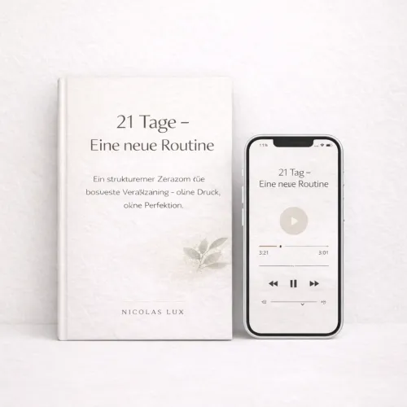

RESET 100 Tage zurück zu innerer Stärke
Produktprofil · Marktplatz-Daten 2026-10-14 · Verkaufsseiten-Recherche 2026-10-14 · Kategorien: Personal Development, Education
- RESET 100 Tage zurück zu innerer Stärke ist ein/e Download in Personal Development und Education, vertrieben über den Digistore24-Marktplatz von Anbieter Niux489, gelistet seit 2026-02-03.
- Listenpreis $47.00 (single payment) — Checkout, Auslieferung und Rückerstattungen laufen über Digistore24 selbst, nicht über den Anbieter.
- Käuferschutz: keine standardisierte Garantie-Formulierung gefunden — Rückerstattungsbedingungen vor der Zahlung auf der offiziellen Seite prüfen.
Interesse an RESET 100 Tage zurück zu innerer Stärke? Aktueller Preis, Boni und Garantiebedingungen finden Sie auf der offiziellen Seite des Anbieters:
Offizielle Verkaufsseite ansehen
Affiliate-Link (Werbung) — wir verdienen ggf. eine Provision, ohne Mehrkosten für Sie.
Marktplatz-Daten
| Produkttyp | Download |
|---|---|
| Preis | $47.00 (Single payment) |
| Garantie/Rückgabe | Laut Verkaufsseite des Anbieters — vor dem Kauf auf der offiziellen Seite prüfen |
| Anbieter | Niux489 (gelistet seit 2026-02-03) |
Marktplatz-Beschreibung des Anbieters
RESET 100 – Produktübersicht für Affiliates RESET 100 ist ein digitales 100-Tage-Selbstführungsprogramm zur Unterstützung von Menschen, die mehr Struktur, Klarheit und bewusste Alltagsroutinen entwickeln möchten. Das Programm bietet eine klare Schritt-für-Schritt-Struktur über 100 Tage und richtet sich an Personen, die ihre Gewohnheiten reflektieren, ihren Alltag ordnen und ihre Selbstorganisation verbessern wollen. Die Inhalte sind ruhig aufgebaut, leicht umsetzbar und auf Alltagstauglichkeit ausgelegt. Leistungsumfang für Käufer Käufer erhalten ein digitales Begleitprogramm bestehend aus: • 4 aufeinander aufbauenden Phasen (Tag 1–100) • 15 Wochenmodule als strukturierender Leitfaden • 18 Audio-Sessions (17 Haupt-Audios + 1 Bonus-Audio) • 24 begleitende PDFs , darunter: – Start-Dokumente – Wochen-PDFs – Phasen-PDFs – Abschluss-PDF – Bonus-PDF „Notfallplan für herausfordernde Tage“ Alle Inhalte sind klar gegliedert und so konzipiert, dass sie schrittweise im Alltag angewendet werden können. Die 4 Programm-Phasen Phase 1 (Tag 1–25) – Stabilität im Alltag Fokus auf erste Routinen, bewusste Selbstbeobachtung und Reduktion von Alltagsüberforderung. Phase 2 (Tag 26–50) – Struktur & Selbstorganisation Aufbau fester Tagesstrukturen, bewusster Umgang mit Ablenkungen und Stärkung der eigenen Verlässlichkeit. Phase 3 (Tag 51–75) – Selbstbild & persönliche Entwicklung Reflexion des eigenen Auftretens, Gewohnheiten und Umfelds sowie Arbeit an langfristigen Verhaltensmustern. Phase 4 (Tag 76–100) – Zukunftsorientierte Routinen Festigung neuer Standards, nachhaltige Alltagsroutinen und Abschluss der 100-Tage-Strukturphase. Bonus-Inhalte Zusätzlich enthalten: • Bonus-Audio: „Wenn du kurz davor bist aufzugeben“ • Bonus-PDF: „Notfallplan für herausfordernde Tage“ Diese Inhalte dienen als zusätzliche Orientierungshilfe in schwierigen Momenten.
Von der Verkaufsseite des Anbieters
Seitentitel: RESET 100 Tage zurück zu innerer Stärke - Digistore24
Hauptüberschrift
RESET 100
RESET 100
RESET 100
Abschnitts-Überschriften
- Dein 100-Tage-Programm zurück zu innerer Stärke, Struktur und Kontrolle
- Das bekommst du mit RESET 100:
- Für wen ist RESET 100?
- Die 4 Phasen von RESET 100
- Bonus für schwere Tage
- Kurz gesagt
- Dein 100-Tage-Programm zurück zu innerer Stärke, Struktur und Kontrolle
- Das bekommst du mit RESET 100:
- Für wen ist RESET 100?
- Die 4 Phasen von RESET 100
Einstiegstext
Du funktionierst nach außen, aber innerlich ist es unruhig? Du grübelst zu viel, kommst schwer in Routinen zurück und merkst, dass du endlich wieder Stabilität, Disziplin und Richtung brauchst?
RESET 100 ist dein strukturierter 100-Tage-Weg zurück zu mehr innerer Stärke, Klarheit und Selbstkontrolle. Kein endloses Motivationsgelaber. Kein „mach einfach“. Sondern ein klarer Fahrplan für 100 Tage, der dich Schritt für Schritt zurück in Struktur, Stabilität und Umsetzung bringt.
RESET 100 ist für dich, wenn du… innerlich unruhig bist und wieder klarer werden willst zu viel nachdenkst und endlich wieder handeln möchtest nach einer schwierigen Phase zurück in Stabilität kommen willst neue Routinen aufbauen möchtest mehr Disziplin, Selbstkontrolle und Struktur brauchst nicht länger nur funktionieren, sondern dich neu ausrichten willst
Du beruhigst deine Gedanken, reduzierst Grübeln, schaffst emotionalen Halt und baust erste kleine Routinen auf, die dir wieder Sicherheit geben.
Preisangaben auf der Seite: $10
Recherche-Methode: rohes HTML · 1361 Wörter · Qualität: rich · recherchiert am 2026-10-14. Vollständige Recherche-Datei (MD) ↗
Wie Produkte dieser Art geliefert werden
Allgemeiner Hinweis zu diesem Produkttyp (keine anbieterspezifische Anleitung): Download-Produkte werden digital geliefert: sofort nach dem Checkout erhalten Sie Downloadlinks (oder Zugang zu einem Mitgliederbereich) — kein physischer Versand. Für die genaue Anwendung von RESET 100 Tage zurück zu innerer Stärke sind die offizielle Verkaufsseite und die enthaltenen Materialien maßgeblich.
Gut zu wissen
- Keine Garantie-Formulierung in unserer Recherche gefunden — bestätigen Sie das Rückgabefenster auf der offiziellen Seite, bevor Sie kaufen.
Was ist RESET 100 Tage zurück zu innerer Stärke?
RESET 100 Tage zurück zu innerer Stärke ist ein/e download in der Kategorie Persönlichkeitsentwicklung des Digistore24-Marktplatzes, veröffentlicht von Anbieter Niux489 und im Verkauf seit 2026-02-03. Der Anbieter beschreibt es so: "RESET 100 – Produktübersicht für Affiliates RESET 100 ist ein digitales 100-Tage-Selbstführungsprogramm zur Unterstützung von Menschen, die mehr Struktur, Klarheit und bewusste Alltagsroutinen entwickeln möchten. Das Programm bietet eine klare Schritt-für-Schr" (Marktplatz-Beschreibung des Anbieters, leicht gekürzt).
RESET 100 Tage zurück zu innerer Stärke Preis: was Sie zahlen
Der Marktplatz listet RESET 100 Tage zurück zu innerer Stärke zum $47.00 Preis (single payment). Digistore24 fügt im Checkout die gesetzliche Steuer Ihres Landes hinzu — dort sehen Sie den Endbetrag vor der Zahlung. Die Verkaufsseite selbst nennt: $10 (Anbieteraussagen — verbindlich ist der Checkout-Betrag). Eine separate Plattformgebühr gibt es nicht; Anbieter können eigene Upsells nach dem Checkout anbieten.
RESET 100 Tage zurück zu innerer Stärke Rückerstattung und Geld-zurück-Garantie
Wir haben keine standardisierte Garantie-Formulierung auf der Verkaufsseite gefunden. Rückerstattungen für Digistore24-Käufe laufen über die Plattform: Antrag über den Support-Link in Ihrer Bestell-E-Mail, innerhalb des Garantiezeitfensters, das im Checkout angezeigt wird. Praktischer Rat: Entscheiden Sie innerhalb des Fensters — wenn das Produkt unter den Erwartungen bleibt, erstatten lassen statt irren lassen.
Mechanik im Detail: So funktionieren Digistore24-Rückerstattungen.
Für wen ist RESET 100 Tage zurück zu innerer Stärke geeignet?
Basierend auf der Persönlichkeitsentwicklung-Einordnung und der single payment-Abrechnung richtet sich RESET 100 Tage zurück zu innerer Stärke an Käufer, die persönlichkeitsentwicklung-Lösungen suchen im mittleren Preisbereich. Der ehrliche Test ist nicht die Kategorie, sondern Ihre eigene Situation: Werden Sie es realistisch innerhalb des Garantiefensters nutzen? Wenn ja, ist der Preis eine Investition; wenn nein, ist er Ballast — unabhängig von der Qualität.
Ist RESET 100 Tage zurück zu innerer Stärke seriös? Was Sie vor dem Kauf prüfen
Wir bewerten keine Seriosität — das kann niemand, ohne das Produkt zu nutzen. Prüfbare Punkte, alle auf dieser Seite: die Marktplatz-Historie des Anbieters (im Verkauf seit 2026-02-03), die wörtlichen Verkaufsseiten-Auszüge unten (gekennzeichnet als Anbieteraussagen — deren Werbung, nicht unsere Empfehlung), die Garantiebedingungen im Checkout und die Auslieferungsart. Vorsichtsignale bei jedem Angebot: Countdown-Dringlichkeit gepaart mit vagen Rückerstattungsbedingungen, Testimonials ohne Datum und Anbieterseiten, die den Preis bis zum Checkout verstecken.
Wie kommen Sie nach dem Kauf an RESET 100 Tage zurück zu innerer Stärke?
Der Checkout läuft über Digistore24. Nach der Zahlung: Download-Produkte werden digital geliefert: sofort nach dem Checkout erhalten Sie Downloadlinks (oder Zugang zu einem Mitgliederbereich) — kein physischer Versand. Bewahren Sie die Bestell-E-Mail auf — sie ist Ihr Schlüssel zum/d zur download, zu Rückerstattungsanträgen und zum Digistore24-Käufersupport.
RESET 100 Tage zurück zu innerer Stärke Erfahrungen: so recherchieren Sie richtig
Die meisten „Erfahrungsberichte" zu Marktplatz-Produkten sind Affiliate-Inhalte — einschließlich Seiten wie dieser, die an Käufen mitverdienen. Behandeln Sie jeden Bericht (auch unseren) als Ausgangspunkt und prüfen Sie gegen Primärquellen: die Verkaufsseite des Anbieters, die Digistore24-Rückerstattungsrichtlinie und — für persönlichkeitsentwicklung — unabhängige Communities außerhalb des Affiliate-Ökosystems. Auf dieser Seite sind die Verkaufsseiten-Auszüge unten wörtlich zitiert, damit Sie die Aussagen des Anbieters bewerten können, ohne wegzuklicken.
Wie Sie RESET 100 Tage zurück zu innerer Stärke sicher kaufen
- Öffnen Sie die offizielle Verkaufsseite und lesen Sie das vollständige Angebot.
- Bestätigen Sie Endpreis und Garantiezeitfenster auf der Digistore24-Kassenseite — sie ist bindend, kein Vergleichsportal.
- Zahlen Sie innerhalb des Digistore24-Checkouts (niemals per Überweisung oder Off-Platform-Links).
- Speichern Sie die Bestellbestätigung; notieren Sie die Rückerstattungsfrist im Kalender.
- Prüfen Sie zügig. Der Digistore24-Käufersupport hilft, wenn der Anbieter nicht reagiert.
Vollständiges Recherche-Archiv für dieses Produkt (Markdown: kompletter Marktplatz-Datensatz + wörtliche Verkaufsseiten-Auszüge): RESET 100 Tage zurück zu innerer Stärke — vollständiges Datenarchiv (Markdown-Datei: 55466-reset-100-tage-zur-ck-zu-innerer-st-rke.md).
- Listenpreis & Abrechnung — Quelle: offizielle Digistore24-Marktplatz-API, Stand 2026-10-14. Maßgeblich für den aktuellen Preis ist immer die Kassenseite.
- Verkaufsseiten-Zitate — Quelle: https://www.checkout-ds24.com/product/666177, abgerufen 2026-10-14 (Methode: rohes HTML). Verify: offizielle Seite öffnen.
- Garantie / Rückgabe — vom Anbieter festgelegt; vor dem Kauf auf der Verkaufsseite bestätigen.
- Nicht von uns geprüft: Produktqualität, Ergebnisse, Testimonials — kein Praxistest für dieses Listing durchgeführt.
Häufige Fragen zu RESET 100 Tage zurück zu innerer Stärke
Antworten aus dem Marktplatz-Snapshot (2026-10-14) und der Verkaufsseiten-Recherche (2026-10-14); Anbieteraussagen sind inline gekennzeichnet.
Was ist RESET 100 Tage zurück zu innerer Stärke?
RESET 100 Tage zurück zu innerer Stärke ist ein Angebot des Typs „Download" im Digistore24-Marktplatz, Anbieter: Niux489, gelistet seit 2026-02-03. Eingepflegt unter Persönlichkeitsentwicklung und Bildung. Digistore24 wickelt Checkout, Lieferung und Rückgaben ab.
Wie viel kostet RESET 100 Tage zurück zu innerer Stärke?
Der Digistore24-Marktplatz listet es für $47.00 (single payment). Preise legt der Anbieter fest und können sich ändern — der Marktplatz-Eintrag oben zeigt den Schnappschuss; die offizielle Verkaufsseite zeigt den aktuellen Preis.
Gibt es eine Geld-zurück-Garantie für RESET 100 Tage zurück zu innerer Stärke?
Unsere Verkaufsseiten-Recherche hat keine explizite Garantie-Formulierung gefunden. Viele Digistore24-Produkte bieten 60 Tage Geld-zurück, aber das legt jeder Anbieter selbst fest — bestätigen Sie es auf der offiziellen Verkaufsseite, bevor Sie kaufen.
Ist RESET 100 Tage zurück zu innerer Stärke seriös?
Wir bewerten keine Seriosität — wir veröffentlichen überprüfbare Zahlen: Anbieter Niux489 (gelistet seit 2026-02-03), mit der vollständigen Verkaufsseiten-Recherche archiviert auf dieser Seite (Anbieteraussagen als solche gekennzeichnet). Lesen Sie unsere 6-Punkte-Bewertungsmethode und entscheiden Sie anhand der Zahlen — oder diskutieren Sie RESET 100 Tage zurück zu innerer Stärke auf GitHub.
Wo kann ich RESET 100 Tage zurück zu innerer Stärke sicher kaufen?
Nur über die offizielle Verkaufsseite, die auf dieser Seite verlinkt ist (Checkout und Rückgaben laufen über Digistore24). Prüfen Sie dort Preis und Garantie vor der Bestellung. Der Link ist ein Affiliate-Link — der Kauf unterstützt diese Website ohne Mehrkosten für Sie.
Wie erhalte ich RESET 100 Tage zurück zu innerer Stärke nach der Zahlung?
Der Checkout läuft über Digistore24: Nach der Zahlung erhalten Sie Ihren Zugang oder Download per E-Mail und in Ihrem Digistore24-Kundenkonto. Lieferdetails für diesen Produkttyp: Download-Produkte werden digital geliefert: sofort nach dem Checkout erhalten Sie Downloadlinks (oder Zugang zu einem Mitgliederbereich) — kein physischer Versand. Bei Problemen kann der Digistore24-Käufersupport Ihre Bestellung wiederherstellen.
Alle 50 Käuferfragen zu Persönlichkeitsentwicklung — das komplette Kategorie-FAQ.
RESET 100 Tage zurück zu innerer Stärke auf Reddit diskutieren
In Community-Threads vergleichen echte Käufer Erfahrungen. Wir verlinken Communities, keine einzelnen Posts — Threads verschwinden, Subreddits bleiben:
- Reddit-Suche nach „RESET 100 Tage zurück zu innerer Stärke" — Live-Ergebnisse, von uns nicht beeinflusst.
- Top-„Erfahrungs"-Treffer dieses Jahr — selbst nach Aktualität filtern.
Passendes auf Amazon.de
Physische Produkte und Zubehör, die häufig zusammen mit RESET 100 Tage zurück zu innerer Stärke gekauft werden:
- Personal Development auf Amazon.de — Top-Ergebnisse, Amazon-Ranking.
- Bestseller: Personal Development — live Liste von Amazon, von uns nicht kuratiert.
Werbung: Als Amazon-Partner verdient DigistorePicks DE an qualifizierten Käufen (Partner-tag adminstorede-21). Amazon setzt eigene Preise und Provisionen (niedrige einstellige Prozente — weit unter den 30–75% der Digistore24-Anbieter). Amazon ist ein Convenience-Angebot für Sachprodukte, kein Ersatz für das digitale Produkt oben.
Ähnliche Angebote in Persönlichkeitsentwicklung

Dauer: Laufzeit 24 Wochen / 6 Monate 1:1 Intensiv Coaching / NeuroZen ® Mentoring für DEIN persönliches Ziel 22 x ZoomCalls von ca. 60-90 Minuten 1 Tag VIP-Live

Dauer: Laufzeit 12 Wochen 1:1 Intensiv Coaching / NeuroZen® Mentoring für DEIN persönliches Ziel - 12 x ZoomCalls von ca. 60-90 Minuten - Datenaustausch via Mai

WOLKENWEICH Online-Begleitung - Dein 6-monatiger Premium Zugang - eingebettet, stabil von allen Seiten, geerdet, sicher, geborgen, ruhig Du erhältst einen Premi

MATRIXPRINZIP – High-Ticket-Produkt mit bis zu 820,56€ Provision pro Verkauf! Mindset, emotionale Intelligenz und finanzielle Intelligenz – genau die Fähigkeite
Weitere Angebote von Niux489

90 Tage – Struktur, Klarheit & innere Stabilität Dieses 90-Tage-Programm richtet sich an Menschen, die sich festgefahren fühlen, innerlich unruhig sind oder

Der 21-Tage Reset ist ein digitales Mindset-Programm für Männer und Frauen, die mentale Überforderung, Stress und innere Unruhe reduzieren und wieder Fokus und

Das „Markiert – Lux-Universum Bundle“ enthält Band 0 und Band 1 in einem Paket und ist ideal für Leserinnen, die nicht nur kurz reinschnuppern, sondern direkt t

Lux-Universum Band 0 – Der Einstieg ist ein Dark-Romance-E-Book für Leserinnen, die keine harmlose Liebesgeschichte suchen, sondern Spannung, Kontrolle und Figu
RESET 100 Tage zurück zu innerer Stärke ist auch gelistet in
Bildung (597 Produkte)
Ähnliche Preislage in Persönlichkeitsentwicklung

LOSLASSEN in verrückten Zeiten 3 Tages intensiv Workshop für mehr Energie & Klarheit Kummer und Ängste spürbar loslassen Fr. 2.12.: Sofort Angst und Unsiche

Verdiene jetzt hohe Provisionen mit Brainwashed Movie – dem transformierenden Erlebnis für grenzenlosen Erfolg! Empfehle deinen Kontakten ein einzigartiges Tool

ImmoClear – Energetische Klärung für schnellere Immobilienverkäufe Warum verkaufen sich manche Immobilien nicht – obwohl Preis, Exposé und Vermarktung stimmen?
Ähnliche Suchanfragen
Wo Sie es sich ansehen können
Wo Sie es sich ansehen können
Aktuelle Preise, Garantie und Boni finden Sie auf der offiziellen Verkaufsseite:
Offizielle Verkaufsseite ansehen
Das ist ein Affiliate-Link (Werbung) — kaufen Sie darüber, verdienen wir ggf. eine Provision, ohne Mehrkosten für Sie.
Quellen & weiterführende Informationen
- Offizielle Verkaufsseite (aktueller Preis, Garantie, Boni): www.checkout-ds24.com/product/666177 (Affiliate-Link)
- Öffentliche Digistore24-Produktseite: checkout-ds24.com/product/666177
- Vollständige Recherche-Datei (Markdown, versioniert): content/products/55466-reset-100-tage-zur-ck-zu-innerer-st-rke.md
- Marktplatz-Kategorie: Persönlichkeitsentwicklung
Wie wir Produkte wie RESET 100 Tage zurück zu innerer Stärke bewerten
Sechs Prüfungen, ausschließlich mit offiziellen Marktplatz-Zahlen. Die vollständige Bewertungsmethode lesen · unsere Recherche-Standards & Kennzeichnung.
Fragen oder eigene Erfahrungen mit RESET 100 Tage zurück zu innerer Stärke?
Praxis-Tests veröffentlichen wir erst, nachdem wir ein Produkt selbst gekauft haben — aber Ihre Erfahrung hilft anderen Lesern: Diskussion zu RESET 100 Tage zurück zu innerer Stärke auf GitHub starten/verfolgen. Falsche Zahl gefunden? Korrektur melden — jede Seite zeigt ihre Datenstände, Korrekturen gelten für die ganze Website.